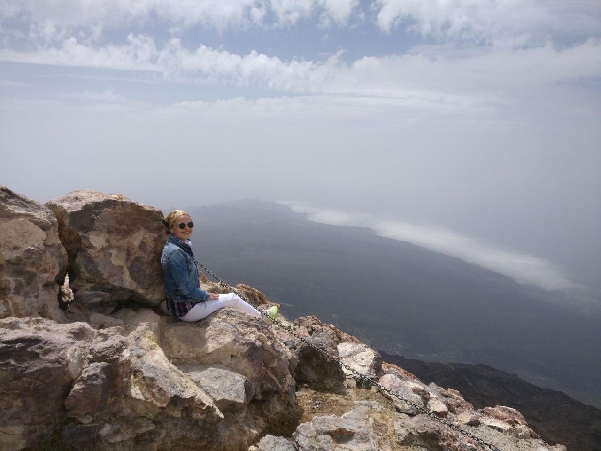

Email: suleyman@mpim-bonn.mpg.de
Office: Vivatsgasse 7, Room 401
53111 Bonn, Germany
I am a postdoc at Max Planck Institute for Mathematics in Bonn.
My research interests lie in analysis on manifolds and spectral theory with focus on spectral geometry. In particular I work on heat trace asymptotic expansions on manifolds with conic singularities and non-isolated singularities.
Here is a pdf version of my CV.